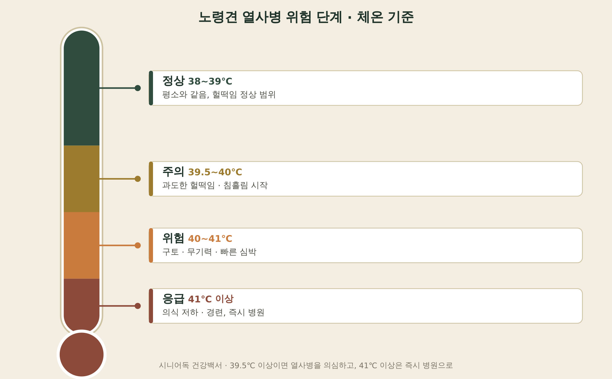
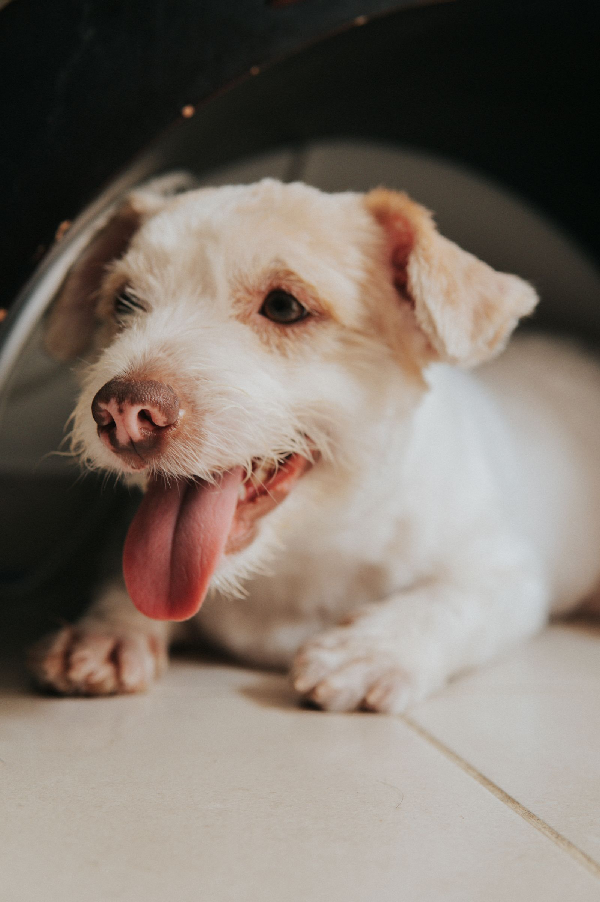
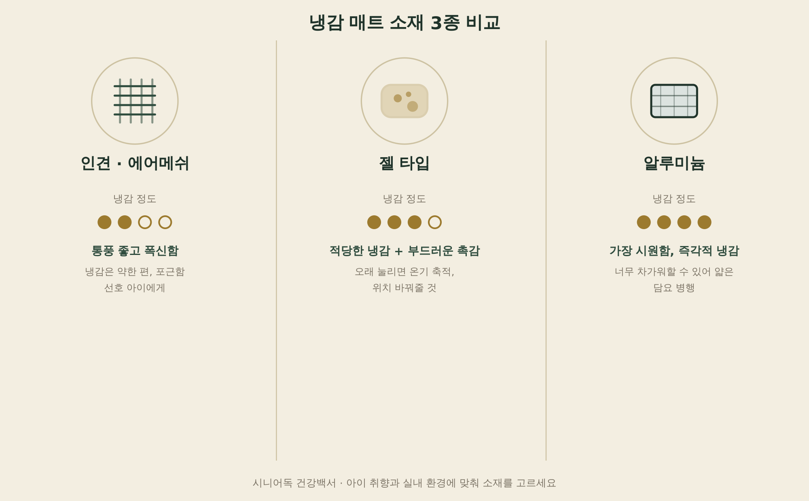
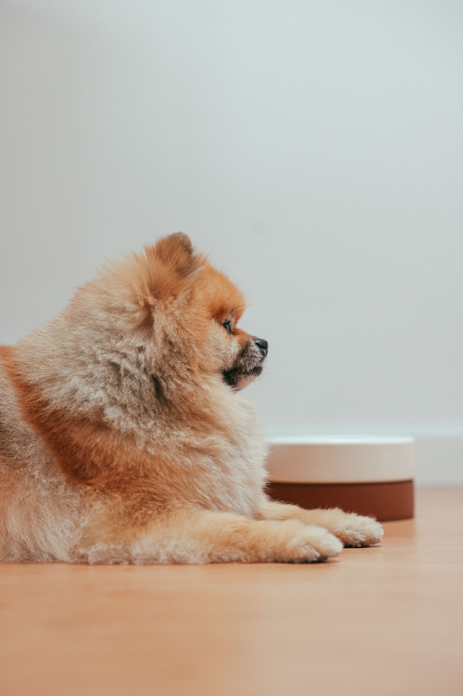

노령견 강아지
여름철 더위 대응 용품 비교
노령견은 젊은 개보다 대사와 체온 조절 능력이 떨어져 있어서, 같은 더위에도 훨씬 빨리, 훨씬 위험하게 반응할 수 있어요. 특히 심장이나 신장에 질환이 있는 아이라면 더위가 단순한 불편함이 아니라 응급 상황으로 이어질 수 있죠. 오늘은 열사병 위험 신호를 체온 기준으로 정리하고, 안전한 산책 시간대와 쿨매트·쿨링조끼 같은 냉감 용품까지 비교해드릴게요.

· 강아지 정상 체온은 38도 안팎이고, 39.5도를 넘어가면 열사병을 의심해야 해요.
· 낮 기온이 33도만 넘어도 아스팔트는 50도를 훌쩍 넘고, 54도 이상이면 60초 만에 발바닥 화상을 입어요.
· 노령견은 대사와 수분 조절 능력이 떨어져 있어서, 젊은 개보다 더 빨리·더 위험하게 체온이 오를 수 있어요.
- 노령견이 여름 더위에 더 취약한 이유
- 열사병 신호, 체온 몇 도부터 위험할까
- 산책은 언제, 얼마나 — 아스팔트 온도 확인법
- 냉감 용품 비교 — 인견·젤·알루미늄
- 실내 온도·습도 관리
- 더위 대응에 도움되는 용품
- FAQ
노령견이 여름 더위에 더 취약한 이유
노령견은 대사 속도가 느리고 체내 수분량이 적어서, 작은 변화에도 심장과 신장이 급격하게 반응해요. 특히 탈수에 가장 민감하게 반응하는 장기가 신장이라, 여름철 수분 섭취가 부족하면 신장 기능이 조금씩 손상되기 쉬워요. 심장 질환·신장 질환·갑상선 문제·당뇨·관절염이 있는 아이라면 체온 조절 자체가 더 예민하게 반응하기 때문에, 겉보기에 괜찮아 보여도 실제로는 더위에 훨씬 취약한 상태일 수 있어요. 비만하거나 단두종, 장모종인 경우도 열 배출이 어려워 위험도가 더 올라가요.
열사병 신호, 체온 몇 도부터 위험할까
강아지 정상 체온은 38도 안팎(37.5~39도)이에요. 39.5도를 넘어서면 열사병을 의심하고, 41도 이상은 의식 저하·경련까지 갈 수 있는 응급 상황이에요.
| 단계 | 체온 | 증상 |
|---|---|---|
| 정상 | 38~39℃ | 평소와 같음, 헐떡임 정상 범위 |
| 주의 | 39.5~40℃ | 과도한 헐떡임·침흘림 시작 |
| 위험 | 40~41℃ | 구토·무기력·빠른 심박, 잇몸 창백 또는 붉어짐 |
| 응급 | 41℃ 이상 | 의식 저하·경련, 즉시 병원 |
열사병이 의심되면 젖은 수건이나 미지근한 물로 몸을 적셔 체온을 낮춰야 해요. 얼음물은 오히려 혈관을 급격히 수축시켜 체온 조절을 방해할 수 있어 쓰지 마세요. 의식이 있으면 물을 조금씩 마시게 하고, 증상이 조금이라도 있으면 바로 병원으로 이동하세요.

산책은 언제, 얼마나 — 아스팔트 온도 확인법
낮 기온이 33도만 넘어도 햇볕에 달궈진 아스팔트 표면은 50도를 훌쩍 넘겨요. 지면 온도가 54.4도 이상이면 60초 이내에 발바닥에 열 손상이 생길 수 있고, 발바닥이 붉게 달아오르거나 물집이 잡히는 게 대표적인 화상 신호예요. 그늘이라도 아스팔트·콘크리트는 온도가 여전히 높을 수 있으니 안심하지 마세요.
수의사들은 오전 9시~오후 6시의 뜨거운 시간대는 피하고, 해 뜨기 전 이른 아침이나 해 진 뒤 늦은 저녁에 산책할 것을 권해요. 나가기 전에는 손등을 바닥에 7초간 대보고 뜨거우면 그날은 산책을 쉬거나 잔디·흙길로 코스를 바꿔주세요. 강아지 전용 신발도 화상 예방에 도움이 돼요.
냉감 용품 비교 — 인견·젤·알루미늄
쿨매트는 소재에 따라 냉감 정도와 특성이 달라요. 인견·에어메쉬는 통풍이 좋고 폭신해서 포근함을 좋아하는 아이에게 맞고, 젤 타입은 적당한 냉감과 부드러운 촉감을 함께 갖췄어요. 알루미늄은 가장 시원하지만 너무 차갑게 느껴 오히려 피할 수도 있어서, 얇은 담요나 수건을 깔아 온도를 조절해주는 게 좋아요.

| 소재 | 냉감 정도 | 특징 |
|---|---|---|
| 인견·에어메쉬 | 약함 | 통풍 좋고 폭신, 포근함 선호 아이에게 |
| 젤 타입 | 중간 | 적당한 냉감 + 부드러운 촉감, 위치 자주 바꿔줄 것 |
| 알루미늄 | 강함 | 가장 시원함, 담요 깔아 온도 조절 필요 |

실내 온도·습도 관리
여름철 실내는 온도 23~26도, 습도 50~60%로 맞춰주는 게 좋아요. 에어컨을 켠 상태에서 쿨매트를 함께 깔아두면, 아이가 추우면 따뜻한 쿠션으로, 더우면 쿨매트로 스스로 이동해 체온을 조절할 수 있어요. 온도를 하나로 고정하기보다 아이가 선택할 수 있는 환경을 만들어주는 게 핵심이에요.
더위 대응에 도움되는 용품
여름철에는 깔아두는 냉감 매트와 외출 시 입히는 냉각 조끼를 함께 준비해두면 실내외 모두 대응하기 편해요.
준비 중
여름철 냉감 매트
침실·거실 어디에나 깔아둘 수 있는 다용도 냉감 매트예요. 세척이 가능해 위생 관리도 수월하고, 에어컨과 함께 쓰면 실내 더위 대응에 기본이 되는 용품이에요.
하루꿈 반려동물 쿨매트 침실 거실 안전한 여름 냉감 매트 다용도 세척 가능 방석 매트 ↗준비 중
외출용 냉각 조끼
산책이나 외출 시 체온 상승을 늦춰주는 쿨링 베스트예요. 이른 아침·늦은 저녁 산책이라도 조끼를 함께 입히면 더위 부담을 한 번 더 덜어줄 수 있어요.
도그아이 강아지 쿨링 베스트 ↗자주 묻는 질문
Q. 쿨매트를 아이가 너무 차가워하면 어떻게 하나요?
A. 특히 알루미늄 소재는 냉감이 강해서 부담스러워할 수 있어요. 얇은 담요나 수건을 매트 위에 깔아 온도를 한 단계 낮춰주고, 아이가 스스로 다가가고 피할 수 있도록 다른 자리도 함께 마련해주세요.
Q. 더운 날엔 산책을 아예 안 나가도 될까요?
A. 완전히 거를 필요는 없지만 시간과 강도를 조절하세요. 이른 아침이나 늦은 저녁에 짧게 자주 나가고, 나가기 전 아스팔트를 손등으로 7초간 확인하는 습관을 들이면 안전하게 산책할 수 있어요.
Q. 심장·신장 질환이 있는 노령견은 더위 대응이 특별히 다른가요?
A. 체온 조절이 더 예민하게 반응하고 탈수에도 취약해요. 물을 자주 마시게 하고, 습식 사료로 수분 섭취를 늘려주는 것도 도움이 돼요. 평소와 조금이라도 다른 헐떡임이나 무기력이 보이면 지체하지 말고 병원에 문의하세요.
다음 글
다음 글은 노령견 강아지 시력·청력 저하 대응 안전용품 비교예요.